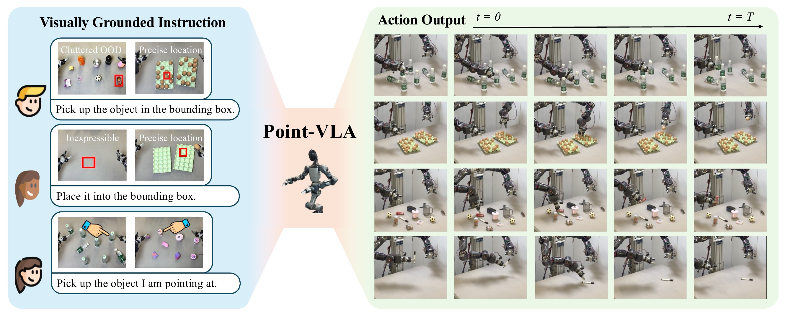
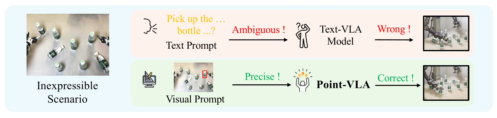
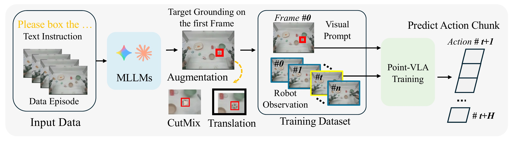
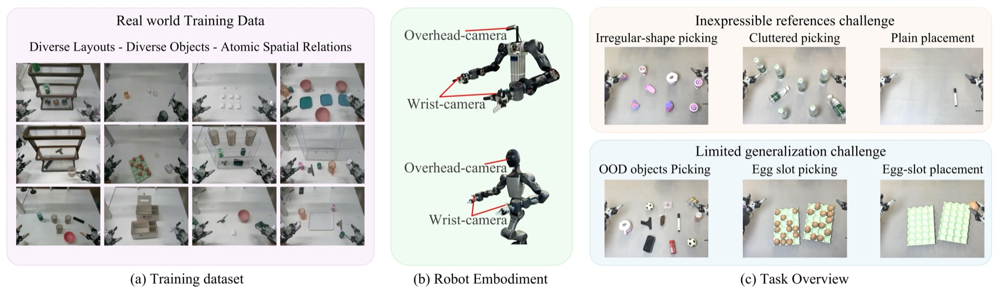
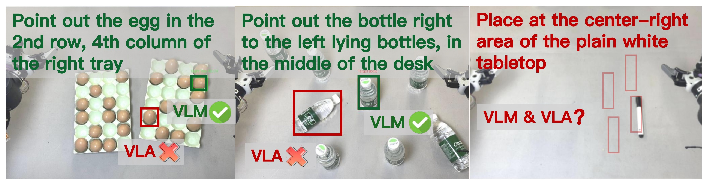
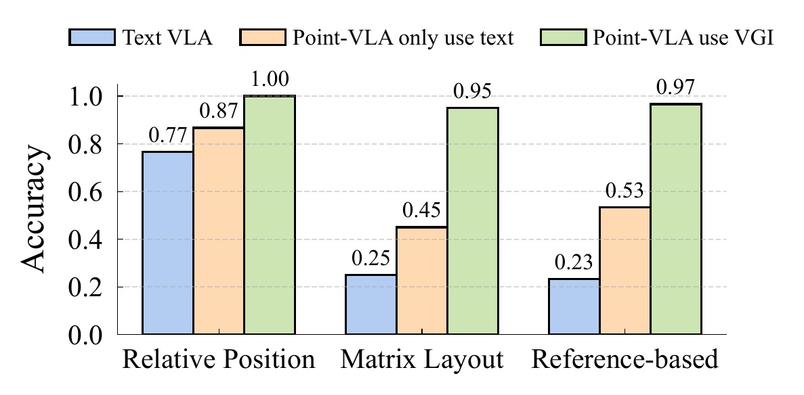
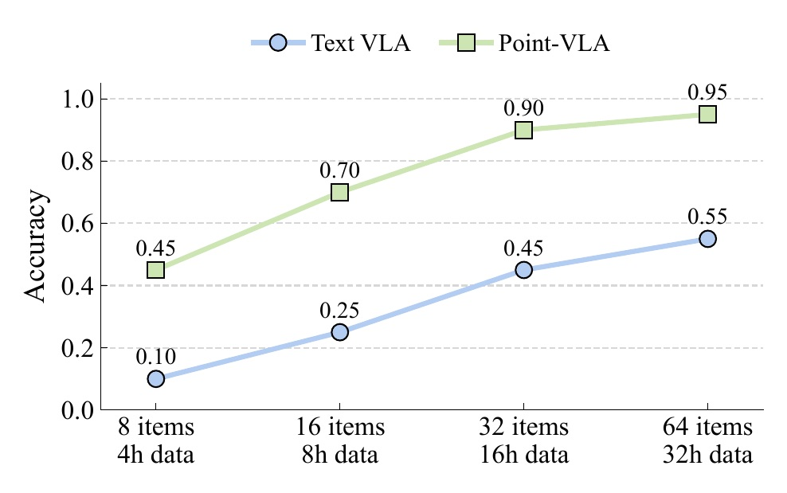

| Method | Irregular Object | OOD Object | Clutter Scenario | Egg from Slot | Plain Tabletop | Egg into Slot | Average |
|---|---|---|---|---|---|---|---|
| Text VLA | 30.0 | 57.5 | 43.3 | 10.0 | 30.0 | 23.3 | 32.4 |
| Interleave-VLA | 60.0 | 86.7 | 33.3 | 13.3 | 26.7 | 20.0 | 40.0 |
| Point-VLA (ours) | 96.7 | 92.5 | 94.3 | 86.7 | 95.0 | 90.0 | 92.5 |

Point-VLA resolves language limitations in robot manipulation through visual grounding with bounding boxes, achieving 92.5% success rate (3x improvement over text-only VLA).
Cluttered Picking
OOD Object Picking
Precise Picking
Container Placement
Vision-Language-Action (VLA) models align vision and language with embodied control, but their object referring ability remains limited when relying solely on text prompts, especially in cluttered or out-of-distribution (OOD) scenes.
In this study, we introduce Point-VLA, a plug-and-play policy that augments language instructions with explicit visual cues (bounding boxes) to resolve referential ambiguity and enable precise, object-level grounding. To efficiently scale visually grounded datasets, we further develop an automatic data annotation pipeline requiring minimal human effort.
We evaluate Point-VLA on diverse real-world referring tasks and observe consistently stronger performance than text-only instruction VLAs, particularly in cluttered or unseen-object scenarios, with robust generalization. These results demonstrate that Point-VLA effectively resolves object referring ambiguity through pixel-level visual grounding, achieving more generalizable embodied control.
Current VLA models rely solely on text to specify manipulation targets. But language is inherently ambiguous for spatial referring:
Humans solve this effortlessly — when words fall short, we simply point. Point-VLA adopts the same intuition:
High-level intent stays in language; precise spatial reference moves to vision.
Point-VLA overlays a bounding box on the camera image to provide pixel-level spatial grounding. The model is co-trained on both textual and visually grounded instructions, yielding a single unified policy that works in either mode.

Inference Pipeline: Users can provide visual grounding through GUI or gestures, combined with simple text commands.
We use MLLMs to automatically generate bounding box annotations from demonstration videos — no manual labeling needed. Two augmentation strategies improve generalization:

Training Pipeline: Automatic data annotation with MLLM, combined with data augmentation strategies (random translation and localized CutMix).

Evaluation Tasks: Six real-world manipulation tasks spanning diverse challenges — irregular object picking, OOD object picking, cluttered scenario picking, egg-slot picking, plain placement, and egg-slot placement.
We compare against two baselines across six real-world tasks:
| Method | Irregular Object | OOD Object | Clutter Scenario | Egg from Slot | Plain Tabletop | Egg into Slot | Average |
|---|---|---|---|---|---|---|---|
| Text VLA | 30.0 | 57.5 | 43.3 | 10.0 | 30.0 | 23.3 | 32.4 |
| Interleave-VLA | 60.0 | 86.7 | 33.3 | 13.3 | 26.7 | 20.0 | 40.0 |
| Point-VLA (ours) | 96.7 | 92.5 | 94.3 | 86.7 | 95.0 | 90.0 | 92.5 |
A key finding reveals the language-action gap:


Text-mode performance is preserved after co-training.

Performance scales with more visually grounded data.
@article{yu2024point,
title={Point What You Mean: Visually Grounded Instruction Policy},
author={Yu, Hang and Zhao, Juntu and Liu, Yufeng and Li, Kaiyu and Ma, Cheng and Zhang, Di and Hu, Yingdong and Chen, Guang and Xie, Junyuan and Guo, Junliang and Zhao, Junqiao and Gao, Yang},
journal={arXiv preprint arXiv:2512.18933},
year={2024}
}